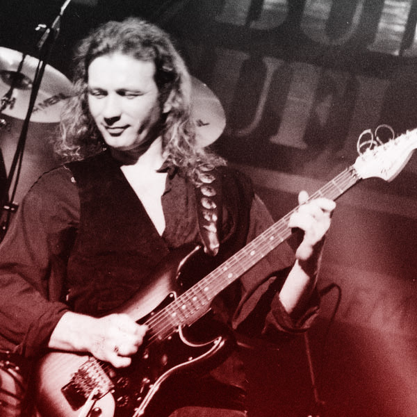
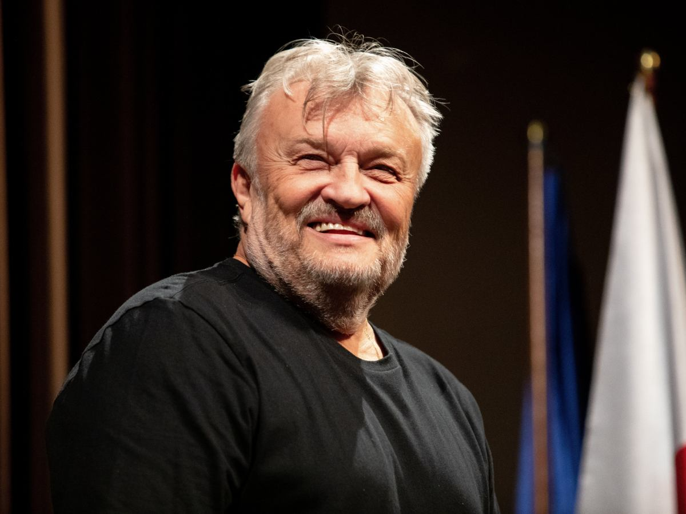

Marek Raduli
Mistrz gitary rockowej i jazzowej, grał z takimi zespołami jak Wanda i Banda, Bajm czy Budka Suflera.
Muzyk bardzo wszechstronny, aktualnie działa solowo.

Mistrz gitary rockowej i jazzowej, grał z takimi zespołami jak Wanda i Banda, Bajm czy Budka Suflera.
Muzyk bardzo wszechstronny, aktualnie działa solowo.
Tak jak pan Marek jest mistrzem gitary, to pan Królik technicznie jest mistrzem mistrzów. Grał min. w Brathankach czy Chłopcach z Placu Broni
Aktualnie gra z Krzystofem Cugowskim i zespołem Mistrzów

Tego pana nie trzeba nikomu przedstawiać... Znany przede wszystkim z Budki Suflera, aktualnie występuje z Zespołem Mistrzów. Ciężko mi było wybrać między nim a Krawczykiem w tej mojej osobistej topce, lecz że panowie powyżej są powiązani...